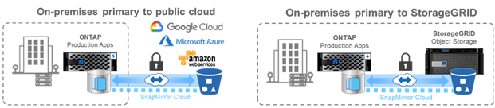

Data Protection
Contributors
 Download PDF of this page
Download PDF of this page
Data protection in the context of this document refers to both the notion of off-site replication of data, as well as securing that data in-flight and at-rest. This section covers the latest data protection enhancements for ONTAP 9.8.
Security
Each ONTAP release builds in new security features and enhancements, and ONTAP 9.8 is no different in that regard. For more information on ONTAP security features, see TR-4569: Security Hardening Guide for ONTAP 9.
Secure Purge
In environments with classified or sensitive data, having a file mistakenly written to a volume that is accessible to people who should not have access to that file creates what is known as a data spill. This creates a scenario in which entire volumes must be deleted and disks scrubbed to clean up the spill.
NetApp Volume Encryption and Secure Purge provided a way to mitigate those potential disasters by offering a way to cryptographically shred individual files by deleting the security encryption key associated with the file. After that key is gone, that data is no longer recoverable from disk. This process has been externally validated by a data recovery company using NIST SP 800-88 guidelines for media sanitation.
But even secure purge had its limits; for example, if you must purge a file, you would need to perform a volume move, which requires available space in the system. If you have SnapMirror in place, you would need to re-baseline after a secure purge operation.
Secure Purge in ONTAP 9.8 removes those limitations by:
-
Providing a simple, in-place procedure for cryptoshredding files.
-
Allowing you to keep your existing SnapMirror mirrors in place with no need to re-baseline.
IPSec
IPSec is a standard mechanism for performing application-agnostic encryption over the wire. With IPSec, you can encrypt network traffic regardless of the protocol in use. That provides opportunities for simplification, particularly with NFS, where Kerberos encryption is difficult to set up and use, as well as providing the only way to encrypt iSCSI traffic over the wire.
ONTAP 9.8 now adds support for IPSec. The ONTAP implementation of IPSec leverages a pre-shared secret or key (PSK) with the connecting client. Those clients include any recent OS that leverages IKEv2 with PSK. Note that the Windows OS does not support IKEv2 with PSK.
Trusted Platform Module
With the new Trusted Platform Module (TPM) in ONTAP 9.8, the encryption keys for the onboard key manager (OKM) are no longer stored in the boot device but instead are stored in the physical TPM for systems so equipped, offering greater security and protection. Moving to the TPM is a nondisruptive process.
NetApp Volume Encryption
NetApp Volume Encryption (NVE) is a software solution that enables encryption of any data volume on any drive type where it is enabled, with a unique key for each volume. This feature has been available since ONTAP 9.1.
ONTAP 9.8 brings NVE support to the node root volumes, which contain log files, cluster configuration backups, core files and other system-related information that you may want to secure with FIPS-140-2 compliant encryption.
SnapMirror Cloud
SnapMirror is industry-leading replication technology in ONTAP that provides a way for storage administrators to create exact copies of datasets across a WAN connection and only replicating the changed blocks for reduced network utilization.
Over the past few ONTAP releases, SnapMirror support has been expanded to include non-ONTAP systems, such as the SolidFire Element OS. ONTAP 9.8 now provides a way to leverage SnapMirror to replicate to cloud or on-premises S3 object buckets.

By leveraging the new SnapDiff 3.0 engine, SnapMirror can securely and efficiently replicate data from ONTAP NAS volumes to object storage buckets. This provides hybrid-cloud mobility across the ONTAP data fabric.
-
Space-efficient backups of snapshots to cloud object storage preserve storage efficiency.
-
Supports full-volume and single-file restore
In ONTAP 9.8, SnapMirror Cloud requires orchestration by one of the following two methods. It is not supported in System Manager or directly through APIs or the CLI.
-
Through a licensed ISV partner application which creates and manage the backup and restore workflows. A SnapMirror Cloud license is required.
-
Through the Cloud Backup Service. A SnapMirror Cloud license is not required.
For more information on SnapDiff and SnapMirror Cloud, see the following resources:
SnapMirror Business Continuity (SM-BC)
SnapMirror Synchronous (SM-S) was introduced in ONTAP 9.5 and provides volume- granular and storage-efficient synchronous data replication that enterprises depend on for backup, disaster recovery, and data mobility. SM-S replicates data on NetApp FlexVol volumes between fully redundant ONTAP storage systems located across data centers or metro regions with a round trip time (RTT) less than 10ms to achieve a zero recovery point objective and a near-zero recovery time objective.
ONTAP 9.8 takes the concept of SnapMirror Synchronous in SAN environments and brings an automated failover capability for applications at the Consistency Group, using System Manager to configure and the ONTAP Mediator to manage and maintain business continuity in the event of an outage. Because the relationship is synchronous, applications won’t miss a beat when failing over. The initial release of SnapMirror Business Continuity only supports SAN (iSCSI and FCP) workloads.
For more information on SnapMirror Business Continuity, see the Tech ONTAP Podcast Episode 267: SnapMirror Business Continuity.
MetroCluster
NetApp MetroCluster (MC) software is a solution that combines array-based clustering with synchronous replication to deliver continuous availability and zero data loss at the lowest cost. Administration of the array-based cluster is simpler because the dependencies and complexity normally associated with host-based clustering are eliminated.
MetroCluster immediately duplicates all your mission-critical data on a transaction-by-transaction basis, providing uninterrupted access to your applications and data. Unlike standard data replication solutions, MetroCluster works seamlessly with your host environment to provide continuous data availability while eliminating the need to create and maintain complicated failover scripts.
With MetroCluster, you can perform the following tasks:
-
Protect against hardware, network, or site failure with transparent switchover
-
Eliminate planned and unplanned downtime and change management
-
Upgrade hardware and software without disrupting operations
-
Deploy without complex scripting, application, or operating system dependencies
-
Achieve continuous availability for VMware, Microsoft, Oracle, SAP, or any critical application
ONTAP 9.8 provides the following feature enhancements for MetroCluster.
-
New entry-level and midrange platform support. NetApp AFF A250, FAS500f, FAS8300, FAS 8700 hybrid, and A400. For new installations of A220, FAS2750, and FAS500f, a VLAN can now be specified to be greater than 100 and less than 4096.
-
Non-disruptive transition from MC-FC to MC-IP. Four-node clusters only; two-node MCC require downtime. Simple to move to MC IP in your upcoming tech refresh.
-
Unmirrored aggregates now supported for MC IP. Replicate only desired aggregates to the failover site for more application granularity.
-
Support for the Cisco 9336C-FX2 switch and for A400, FAS 8300, and FAS 8700 on the BES-53248 switch with an additional 100G port license.
For more information about MetroCluster, see the following resources:
 Edit on GitHub
Edit on GitHub